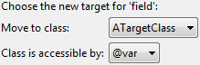

| Option | Description |
|---|---|
| Move to class | Here the target class can be selected among the possible target classes to move the field to. |
| Class is accessible by | The field which can be selected here has to point at an instance of the class seleced as target. |